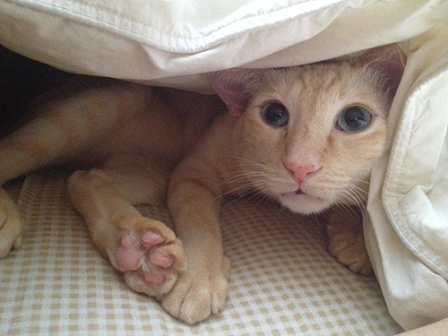

Toggle navigation
An example rich UI site
ZeroNet ROCKS!!
This website lists all the links on ZeroNet.
ZeroHello
Some links:
Tutorial on how to use ZeroNet
Bluish Coder (Blog)
Example site using bootstrap and jquery. (Tutorial)
dydx's ZeroNet site (Blog)
Before the Law by Franz Kafka (Short Story)
Pitcairn Island 2012 Photos (Big Slideshow!)
Elmit's ZeroBlog
ZeroSearch
ZeroTalk
More links:
ZeroNet windows requirements - Download links
ZeroNet Links
ZeroBlog - This is a quick demo of one way you could make a blog work on ZeroNet
This site is a public access site!
ZeroBay - Pirate Bay mirror proof of concept
ZeroHabr
High Maintenance - S04E01 - Qasim (Big Video!)
ZeroBoard
Even more links:
RushWallet by Kryptokit
decentral - A weblog for the zeronet
TV Episode Magnet Mirror
River of News
Games (8080 Games Emulator)
ZeroNet Index
SmokingCode Blog
adultlit - A test at client side decrypting data so the content stored on disk is not searchable.
18UEjq5Pdy4TM6tDFV9GftLdUYvZuEFSNp
Hello
ZeroBlog
Please submit your ideas for the ZeroNet project to:
https://github.com/HelloZeroNet/ZeroNet/issues/new
Join us on reddit at
http://www.reddit.com/r/zeronet
Lighthouse crowdfunding is up:
https://lighthouse.bitseattle.com//lighthouse-projects/zeronet-early-development-public-funding-1.lighthouse-project
ZeroNet Proxy:
http://zero.network:43110/1Gfey7wVXXg1rxk751TBTxLJwhddDNfcdp
ZeroNet Proxy:
https://zeronetproxy.github.io/

What would be the world without cats?
* Special thanks to
1LN17ML3LRKxXzKjan5ty2k4VisYuMhKhF
for his template! :)
{kind=link}